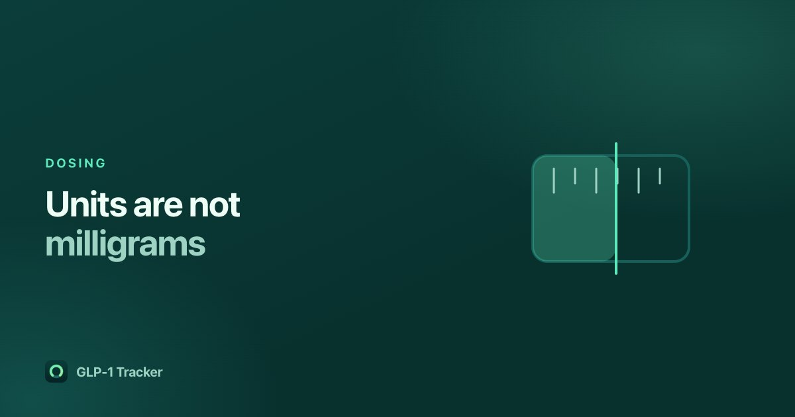

Vials and syringe units: why the number on your syringe is not milligrams

A pen tells you milligrams. A vial and syringe tell you units. They are not the same number and they are not interchangeable, and the thing that connects them — the concentration of what is in your vial — is printed on the vial rather than being a property of the drug.
Read this as background, not as instructions. What you draw up is set by your prescriber and by the vial in your hand. If the arithmetic below does not match what you were told, what you were told is right and you should ask your prescriber or pharmacist. This page exists because a lot of people move from a pen to a compounded vial and are handed two different units with no explanation of how they relate.
The three numbers
- Milligrams (mg)
- The amount of drug. This is the number your prescriber talks in, and the number a pen is labelled with.
- Concentration (mg/mL)
- How much drug is dissolved in each millilitre of liquid in your vial. Compounded vials come in different concentrations, so this is not a fact about the medication — it is a fact about the specific vial, printed on the specific label.
- Syringe units
- Marks on the barrel of an insulin syringe. On the common U-100 syringe, one unit is 0.01 mL — that is a measure of volume, and it says nothing at all about how much drug is in that volume.
How they connect
Because a U-100 unit is 0.01 mL, the volume you draw and the amount of drug in it are related by the concentration:
milligrams = units × 0.01 × concentration (mg/mL)
Which means the same mark on the same syringe delivers different amounts from different vials. Twenty units is 0.2 mL either way. From a 2.5 mg/mL vial that is 0.5 mg; from a 5 mg/mL vial the identical 20 units is 1 mg. Twice the drug, same number on the syringe.
This is the whole reason the distinction matters, and it is why "I take twenty units" is not a dose anybody else can interpret without also knowing your vial.
Where this goes wrong
- Switching vials. A new vial at a different concentration changes the number of units for the same dose. The unit count you memorised belongs to the old vial.
- Syringes that are not U-100. The 0.01 mL per unit figure is specific to U-100. Check what you have.
- Repeating a unit count between people. Advice in a forum expressed in units is meaningless without the concentration, and potentially dangerous if the concentrations differ.
If any of those apply to you, the answer is your prescriber or pharmacist, not arithmetic from a blog post.
What a tracker can honestly do here
It can record what you did, in both numbers, so your history means something months later. Our app lets you enter a dose in either milligrams or syringe units and shows the other as you type, using the concentration you recorded for that course. That is a conversion, not a recommendation: the app never proposes an amount, never prefills one from your recorded strength, and never advances you along a schedule.
If you have not recorded a concentration for a compounded vial, it will not guess one. It asks for milligrams instead, because inventing a concentration would mean inventing a number in your own medical record.
A word on compounded medication
Compounded semaglutide and tirzepatide are not the branded products and do not carry the same published pharmacokinetic data. Our app reproduces the manufacturers' published half-lives for the branded medications — from the FDA prescribing information, with the label revision recorded alongside each value — and for a compounded course it says plainly that it cannot know, because the compound is not a published product. An estimate presented confidently would be worse than no estimate.
Get GLP-1 Tracker on the App Store
Common questions
How many milligrams is one unit on an insulin syringe?
It depends entirely on the concentration of your vial. On a U-100 syringe one unit is 0.01 mL of volume, so milligrams = units × 0.01 × the vial's concentration in mg/mL. The same 20 units delivers 0.5 mg from a 2.5 mg/mL vial and 1 mg from a 5 mg/mL vial.
Why do vials use units when pens use milligrams?
A syringe measures volume, and its unit marks are a volume scale. A pen is labelled by the amount of drug it delivers. The concentration printed on your vial is what converts between the two, and it varies between vials.
Can GLP-1 Tracker convert between units and milligrams?
Yes. You can enter a dose in either and it shows the other as you type, using the concentration you recorded for that course. It is a conversion only — the app never suggests, prefills or adjusts a dose.